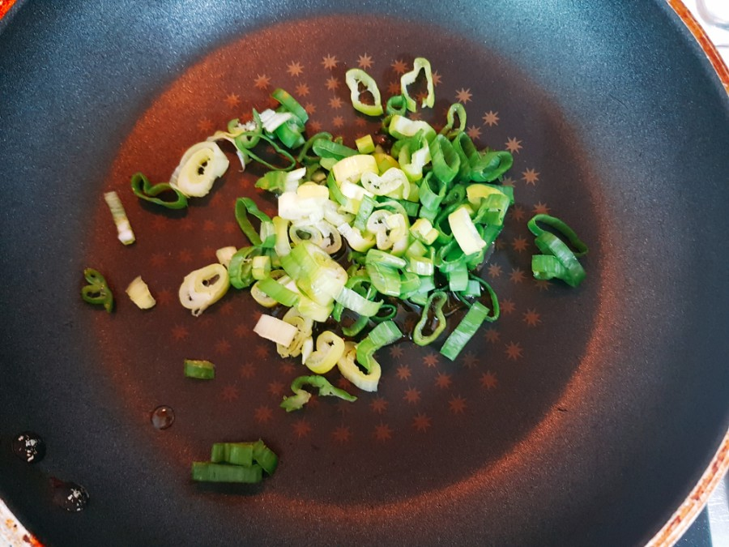

고소한 들기름 계란 프라이 만들기
들기름 계란 프라이 만드는 순서
- 1. 대파를 잘게 썰어 준다.
- 
- 2. 달궈진 팬에 들기름을 3스푼 둘러 주고, 대파향이 어느정도 날 때까지 대파를 볶는다.
- 3. 대파 위에 계란 3개를 익혀 준다.
- 4. 접시에 국간장 1/2스푼을 넣고, 계란프라이를 올린 다음 통깨를 뿌려 준다.
들기름 계란 프라이?
- 들기름 계란 프라이는 요리연구가 백종원이 만든 것으로 유명하다.
- 백종원이 만든 이 요리를 많은 사람들도 따라 만들고 있다.